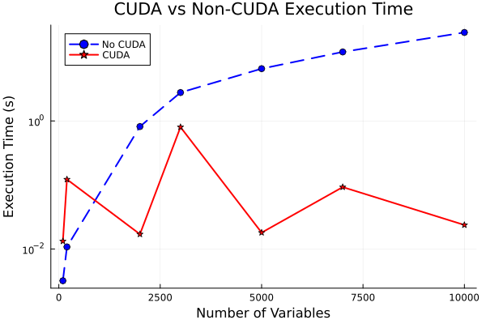

Benchmarking L-BFGS Optimization with and without CUDA Acceleration
The package can be used to evaluate the performance of the L-BFGS optimization method for various functions, both with and without CUDA acceleration. The functions are:
- Gaussian Function
- Gaussian with Squared Input
- Quadratic Function
A single benchmarking test is performed with increasing solution sizes, and the execution time (mean and minimum) for both CPU and GPU implementations is recorded.
The performance is measured using BenchmarkTools, with benchmarking being run on both CPU and GPU (using CUDA). Results, including computation times and minimum values of the objective functions, can be stored in a DataFrame format for further analysis. The optimization function is selected based on a user string input (f_str), allowing for flexible function testing.
I will show the plot only for quadratic function as even for 100 variables the simple gaussian took both solvers about 30 minutes to benchmark and if I was to somehow approximate the relationship between number of variables used in the optimization and the time which it takes to finish the @benchmark test as a linear function, it would take cca 308064=24e4 seconds, which is about 3 days of continuous load for a single benchmarking test, which my parents would probably not be happy about :o).
The plot can be recreated using simple plotting script in scripts/plot_bench.jl
Quadratic function for height = 40

The plot has logarithmic y-axis, hence the difference in time is bigger. The original values together with the measured data in table are shown below.
Measured data for Quadratic function
The data were rounded to 4 decimal points
| Num_Variables | CUDA | Mean_t | Min_t | Min_Value |
|---|---|---|---|---|
| 100 | false | 0.0032 | 0.0009 | 0.0000 |
| 100 | true | 0.0132 | 0.0117 | 0.0002 |
| 200 | false | 0.0108 | 0.0037 | 0.0000 |
| 200 | true | 0.1221 | 0.1097 | 0.0003 |
| 2000 | false | 0.8175 | 0.7480 | 0.0000 |
| 2000 | true | 0.0170 | 0.0133 | 0.0037 |
| 3000 | false | 2.7774 | 1.8775 | 0.0000 |
| 3000 | true | 0.8006 | 0.7481 | 0.0057 |
| 5000 | false | 6.5454 | 6.5454 | 0.0000 |
| 5000 | true | 0.0180 | 0.0146 | 0.0095 |
| 7000 | false | 11.9569 | 11.9569 | 0.0000 |
| 7000 | true | 0.0926 | 0.0822 | 0.0136 |
| 10000 | false | 24.0851 | 24.0851 | 0.0000 |
| 10000 | true | 0.0237 | 0.0196 | 0.0195 |
It is clear that the more variables we use, the more CUDA enabled solution dominates. The most extreme values tell us that even though we have on 10000 variable optimization problem, the best (smallest) sum of squared errors was 0.0195 (which by itself is very small -> 0.0195/1e4=...), we got speedup of around 24/0.02=1200!! This means that if we optimized 10000 variable quadratic function using CUDA, it would run in average 600 times faster than on CPU.